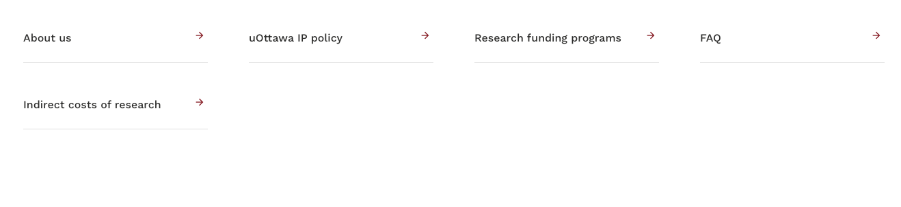
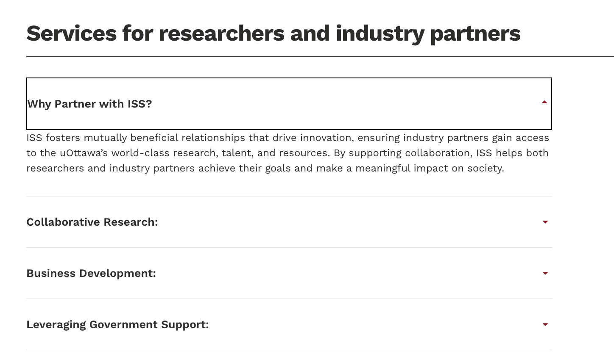
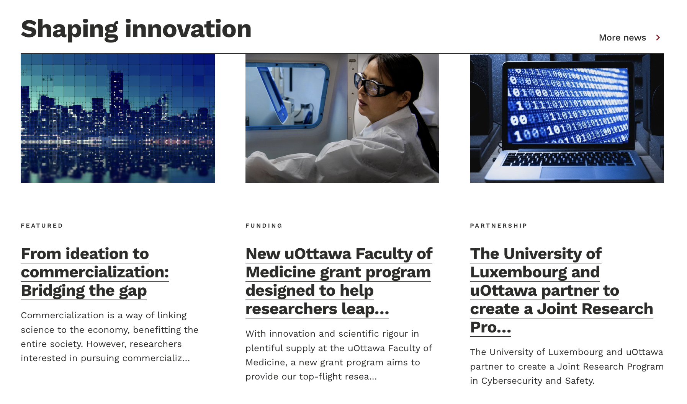
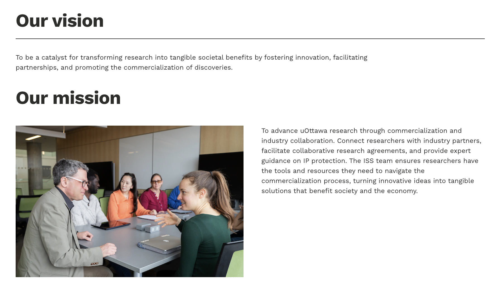
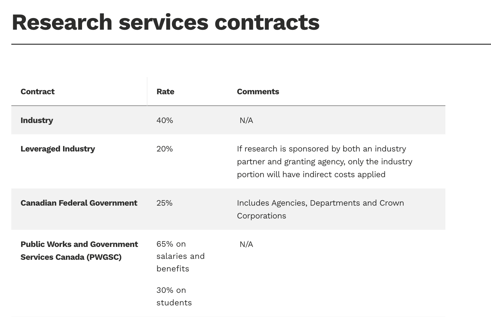

Navigator Bar Redesign Based on Department Structure
Redesigned the navigation bar for the Innovation Support Services (ISS) website
based on insights gathered through multiple meetings with the department manager. I
categorized the navigation buttons by analyzing ISS’s core activities and services,
ensuring each section reflected real user needs. The final layout simplifies user
access to key resources, aligns with departmental goals, and improves the overall
clarity of the site.

Interactive Dropdown Design for Service Overview
Designed a dropdown-style content layout to present ISS’s services for researchers
and industry partners. This section contains a large amount of detailed information,
which was originally displayed as long, static paragraphs. By using collapsible
menus, I improved content scannability, reduced visual overload, and allowed users to
easily navigate to the topics most relevant to them.

Visual News Highlights Section
Designed a dynamic and visually engaging news section titled “Shaping Innovation” to
feature ISS updates, funding opportunities, and partnership announcements. I used a
card-based layout with bold headlines, preview text, and visual thumbnails, enabling
users to scan content quickly. This layout not only improved content discoverability,
but also aligned with the modern, professional brand tone of the department.

“Related Links” Section
Designed a visually consistent “Related Links” section to guide users toward key
affiliated resources such as Research and Innovation, the Kanata North campus, and
the Entrepreneurship Hub. I used uniform icon style and circular image formatting to
maintain visual alignment with the ISS site branding. This section enhances
cross-navigation and encourages deeper engagement with the broader uOttawa research
ecosystem.
Clear Vision & Mission Section for Credibility
Structured the “About Us” page around clear and concise vision and mission
statements, supported by relevant imagery to reflect ISS’s role in fostering
research and industry collaboration. The layout balances textual clarity and visual
engagement, helping users quickly understand ISS’s purpose and values. This section
reinforces organizational credibility and establishes a strong first impression for
new visitors.

Structuring IP Policy Content for Readability
Created the “uOttawa IP Policy” page to clearly communicate ownership rules and
disclosure obligations. I applied a clean layout with bullet-point formatting, bold
section titles, and visual icons to break down complex information. This section
helps researchers understand their intellectual property rights and responsibilities
at a glance, improving accessibility and reducing confusion around commercialization
processes.
Tabular Design for Indirect Research Costs
Designed a structured and easy-to-read table for the “Indirect Costs of Research”
page, displaying contract types, applicable rates, and contextual comments. This
format allows researchers and administrators to quickly compare cost structures
across various funding sources. The use of clear alignment, consistent typography,
and category-based grouping ensures maximum legibility, even for dense financial
content.
